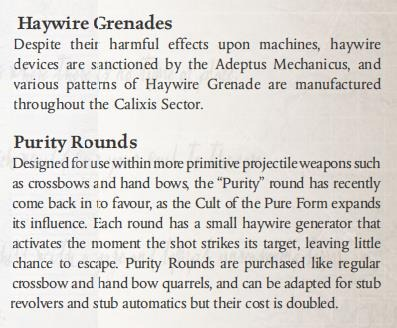
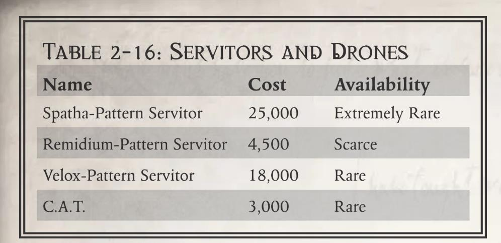

hunched form, permanently reducing their Agility by 1d10. An Enhanced Potentia Coil can be used for all of the following benefits:
Luminen Blast / Luminen : Gain +1d10 Damage, a Penetration value equal to the user's Willpower Bonus, and the Shocking Quality.
Luminen Shock/Luminen Surge: Gain a Penetration value equal to the user's Willpower Bonus as well as the Shocking and Tearing Qualities.
Luminen Shield/Luminen Barrier: Can be activated as a Reaction.
Luminen Charge: Tests are 2 steps easier (i.e. Hard (–20) Test becomes a Challenging (+0) Test).
Maglev Grace/Maglev Transcendence: Maintaining these abilities becomes a Free Action. Maglev Grace can be performed once every 6 hours. Maglev Transcendence can be performed twice every 6 hours
Electrical Succour: Takes half a minute to conduct and becomes an Easy (+30) Toughness Test.
Ferric Lure/Ferric Summons: Become Free Actions
Integrated Weapon: The weapon gains the Reliable Weapon Quality.
作为标准储压线圈的更重型替代品，增强储压线圈可以在更高的水平上提供能源，以增强机械教成员的许多通用能力。增强储压线圈的安装涉及困难和植入性手术，因此增加增强储压线圈所需的时间为 15 +1 周。质量差的增强储压线圈会让使用者留下明显的驼背，永久性地降低敏捷度 1d10。增强储压线圈可以获得以下所有增强：
线圈冲击/线圈闪耀：获得+1d10 伤害，穿甲值等于使用者意志力加成的，具有震慑。
线圈放电/线圈电涌：获得与使用者意志力加值相等的穿甲值，以及震慑和撕裂。
线圈护盾/线圈屏障：可以作为反应激活。
线圈充能：测试降低了 2 个难度（即难度（-20）的测试变成了挑战性（+0）的测试）。
磁力优雅/磁力飞跃：维持这些能力变为自由动作。磁力优雅可以每 6 小时运行一次。磁磁力飞跃越每 6 小时可以进行两次。
电子援助：耗时半分钟完成，变成简单（+30）韧性测试。
金属吸引/金属召唤：变为自由动作。
集成武器：武器获得可靠。
The Lathes are known for mysterious and frequent gravity shifts, which can overcome even experienced Tech-Priests when they are in areas not properly shielded with dditional grav plating. Years of study indicated that replating the myriad facilities would be impractical, so many in the far edges of the system began surreptitiously developing a radical mechadendrite design to aid in their work. Instead of adding additional anipulation capabilities, pairs of gyroscopically stabilised, heavily clawed talons can anchor a Tech-Priest firmly onto a surface, where he can conduct his furtive research more peacefully. Though somewhat heretical, more and more are appearing across the Lathe Worlds.
Lathes Stabilisers require a Half Action to activate or deactivate. Once active, if the Acolyte remains in place, he counts as being Braced and gains the Sturdy Trait. The Acolyte also ignores modifiers to his Movement in areas of High, Low, or Zero Gravity and in areas with Tremors or other uncertain stability, as well as gaining a bonus to Climb Tests. The Mechadendrite Use (Utility) Talent applies to this Mechadendrite.
拉斯以神秘而频繁的重力变化而闻名，即使是经验丰富的技术神甫，当当他们处于没有适当防护的区域时，也能克服重力变化。多年的研究表明，重新规划无数的设施是不切实际的，因此边缘区域的许多人开始秘密开发一种激进的机械附肢设计来帮助他们的工作。与其增加额外的操作能力，不如用成对的陀螺稳定的重爪将技术神甫牢牢地锚定在表面上，在那里他可以更平静地进行他的秘密研究。虽然有点异端，但这项技术越来越多出现在拉斯世界。
拉斯稳定机械附肢需要半动作才能激活或停用。一旦激活，如果辅助设备保持原位，他将被视为处于支撑状态，并获得坚固属性。辅助设备会忽视在高、低或零重力区域以及有震颤或其他不确定稳定性的区域的动作修正，并获得攀爬测试的奖励。拉斯稳定机械附肢需要机械附肢使用（实用）天赋。
As one of the main voidship construction and repair facilities within the Calixis Sector, forge world Perinetus has developed numerous adaptive technologies to make working in zero-gravity environments easier and more efficient. One such device is the Perinetus Pattern Servo-arness, a large, backpack-like cybernetic that gives its user the ability to carry and use more tools simultaneously as they float around damaged and unfinished vessels. Additionally, small anoeuvring thrusters sprout from various points across the harness, allowing for greater control in environments without gravity.At a minimum, each Perinetus-Pattern Servo-Harness consists of one Manipulator Mechadendrite, one Utility Mechadendrite, a Combi-tool, a Fyceline Torch, and a Plasma Cutter. The torch is identical to a Flamer. The plasma cutter can burn through a metre of adamantine plating up to 20 centimetres thick every minute (thinner material can be cut through faster); it may also be used as a Plasma Pistol with a Range of 10m. A Perinetus-pattern Servo-Harness also has several manoeuvring thrusters, that grant the user the Flyer (6) Trait when used in areas with very low or no gravity.A character with Talents that allow him to make Multiple Attacks may use any weapon (or quivalent) on his Perinetus Pattern Servo-Harness for any of the attacks he would normally be allowed, subject to all normal limitations including weapon Class. Additionally, the user may use his normal Reaction to make a single shot or strike with any one weapon on the harness. The attachments on the Perinetus-pattern Servo-Harness can be swapped out for other items, such as other forms of Mechadendrites, Bulkhead Cutters, and even full-sized Servo Arms. The alents Mechadendrite Use (Manipulator) and (Utility) are required in order to use a Perinetus-pattern Servo-Harness, and the user must possess the Mechanicus Implants Trait.
作为卡利西斯星区的主要舰船建造和维修设施之一，铸造世界佩里内图斯开发了许多自适应技术，使在零重力环境中工作更容易、更高效。其中一种设备是佩里内图斯型伺服装具，这是一种大型的背包式控制装置，使用户能够在受损和未完成的船只周围漂浮时同时携带和使用更多的工具。此外，小型电动推进器从装具的各处伸出，允许使用者在没有重力的环境中进行更好的姿态控制。每个佩里内图斯型伺服装具至少由起重附肢、一个多功能附肢、一套组合工具、弗塞林割炬和等离子切割机组成。弗塞林割炬与火焰器完全相同。等离子切割机每分钟可以烧穿一米厚达 20 厘米的精金（较薄的材料可以更快地切割）；它也可以用作射程为 10 米的等离子手枪。佩里内图斯型伺服装具还具有几个运动推进器，在重力非常低或没有重力的区域使用时，可以为用户提供飞行（6）特性。一个有天赋的角色可以进行多次攻击，他可以在佩里内图斯型伺服装具上使用任何武器（或等效武器）进行通常允许的任何攻击，但须遵守所有正常限制，包括武器类别。此外，使用者可以使用其正常反应进行单次射击或使用伺服装具上的任何一件武器进行打击。佩里内图斯型伺服装具上的附件可以换成其他物品，如其他形式的机械附肢、舱壁切割器，甚至全尺寸伺服臂。使用佩里内图斯型伺服装具需要机械附肢（起重）和机械附肢（多功能），并且用户必须具备机械装殖特性。
A large number of Mechanicum technologies, such as Manipulator Mechadendrites and Servo-Arms, are designed for a specific practical purpose; whatever use they have as a weapon is often secondary and incidental. The Servo-Claw is the opposite, a form of Mechadendrite esigned purely for its combat applications that can also be used as a makeshift tool. Consisting of tightly wound bundles of synthetic muscle fibres contained within a small metal framework, the Servo-Claw ends in a sharp, serrated claw that can cut through armour and snap bones with remarkable ease, leaving the user's hands free for other matters.A Servo-Claw is usually mounted at waist height, as not to interfere with the movement of the arms or any other Mechadendrites. It can be used to make any normal Attack Action as if it were a regular Melee weapon, or can be used to make a Standard Attack as a Reaction (but never both in the same Round). This attack is made with the user's Weapon Skill, and deals 1d10+10 Rending Damage with a Penetration of 4 and the Tearing Quality. The servo-claw never adds the Strength of the user to its Damage. It can be used to grip and lift objects using its Strength of 50 and Unnatural Strength (x2) Trait, and can be used as a makeshift Manipulator Mechadendrite, with a –10 penalty to all associated Tests. The Mechadendrite Use (Manipulator) Talent applies to this Mechadendrite.
大量的机械技术都是为特定的实际目的而设计的，如起重附肢和伺服臂；它们作为武器的任用途往往都是次要和附带的。伺服爪则相反，它是一种纯粹为战斗应用而设计的机械附肢，也可以用作临时工具。伺服爪由紧密缠绕的电子肌纤维束组成，包含在一个小金属框架内，末端是一个锋利的锯齿状爪子，可以非常轻松地击穿盔甲和折断骨头，同时让使用者的手可以自由地处理其他事情。伺服爪通常安装在腰部高度，以免干扰手臂或任何其他机械臂的运动。它可以像普通近战武器一样进行任何正常的攻击动作，也可以作为一种反应进行标准攻击（但不能在同一回合中同时进行）。此攻击使用使用者的武器技能进行测试，造成 1d10+10 人身伤害，穿甲为 4，撕裂。伺服爪不会获得使用者的力量加值。它可以使用其力量为 50 和超自然力量（x2）特质来抓握和举起物体，也可以用作临时起重机械附肢，所有相关测试的惩罚为-10。伺服爪需要机械附肢（起重）。
最珍贵的装置莫过于那些来自黑暗科技时代的圣物，那是一个永远无法重现的传奇年代。对于技术神甫来说，能受任保管这些神圣机械是一种至高无上的荣耀。
“卡梅莱林迷彩网”实际上是指卡利西斯星区各处古代圣物库与科技库中一系列相似的迷彩网装置。每一套迷彩网都独一无二，尺寸从数米到数百米不等。它们都是由高强度钨杆支撑的柔性联锁网格——钨杆高度可达六米，网格颜色从深绿到漆黑不一。当电流通过网格表面时，这些网格会瞬间改变色彩以匹配周围环境，完美隐藏网下所覆盖的一切，效果类似卡梅莱林迷彩材料。至今无人理解这种迷彩网的运作原理，也无人可以修复它。即使只是拥有一小块迷彩网，也能为持有者在侦察或隐藏物品时提供决定性优势。
卡梅莱林迷彩网的覆盖范围由 GM 裁定。使用迷彩网无需专业技术，架设方式类似大型帐篷或防水布，只要有稳定电源就可激活它。处于迷彩网下的单位在躲藏检定中获得+50 加值，但迷彩网本身不提供掩体保护。每块网格（通常不超过两米宽）损坏后不可修复。
重量：多样
价格：使用古代科技特殊规则计算
稀有度：使用古代科技特殊规则计算
这种植入皮下的护甲能额外提供关键防护。它为头部装甲值+1，可与其他护甲或天赋（如“血肉苦弱”）叠加。劣质颅骨装甲粗糙显眼，永久降低使用者 1d10 点社交；优质品质则额外+1 装甲值（总计+2）。
重量：无
价格：600
稀有度：稀有
在卡利西斯星区的地下世界中，存在一种被称为“暗影面纱”或“虚无之尘”（Lacuna dust）的稀有物质，起源地未知。据说这种物质看起来比虚空本身更为幽暗，可用于覆盖物体甚至人体，让被覆盖的东西在微光环境下近乎隐形。即便是使用扫描仪，也难以探测到涂覆暗影面纱的目标。
暗影面纱可应用于武器、衣物或裸露皮肤等任何表面。在阴影或弱光环境中隐藏时，暗影面纱为躲藏检定提供+60加值。若使用扫描设备（如鸟卜仪）探测被覆盖目标，操作者需通过一次极难（-30）技术使用检定才能成功定位。单罐暗影面纱的剂量足以覆盖一名标准体型人类（含衣物与基础装备）。
重量：无
价格：450
稀有度：非常稀有
机械神教的多数成员选择以机械替代脆弱血肉，但也有一些人通过化学药剂使肉体如义体般坚韧。将“辉石肌体”注入体内后，会在短时间内使皮肤散发暗淡的灰白光泽，能够抵御极端温度甚至真空环境。
注射后，角色获得“血肉苦弱”特质（数值为坚韧加值的一半，向上取整），同时具备抵抗（高温）特质，并在抵抗辐射的检定时获得+10 加值。效果持续 1d5 小时，消退后角色承受 1d5 级疲劳。
重量：无
价值：600
稀有度：非常稀有
这种培养槽中生长的致密肌肉组织混编了防弹纤维，植入后可大幅增强力量。标准移植使力量加值+1；优质品质移植赋予超自然力量（×2）特质，但会因体型扭曲而使敏捷检定承受-10 惩罚。
重量：无
价值：2000
稀有度：非常稀有
虚空灾星发生器，官方代号为“冥府型旋转引力谐波干扰装置”，是一种极为恐怖的破坏武器，在玛琉格利斯技术异端横行的黑暗时期中重见天日。它通过引力波与声波传输干扰舰船的盖勒力场，致使盖勒力场过载，从而令亚空间能量涌入船体。更致命的是，该装置可从舰内任意位置启动且易于隐藏。倘若落入恶人之手，虚空灾星发生器将造成极大的破坏，因此，在玛琉格利斯异端末期，虚空灾星发生器基本被全面禁止。只有审判庭才能授权使用这种装置，但即使是他们，也不确定到底有多少虚空灾星发生器被创造出来，又有多少发生器在卡利西斯星区传播开来。
虚空灾星发生器会在舰船进入亚空间的瞬间激活，约一个小时后达到最大功率。舰船越大，船员就越有可能及时发现盖勒力场的破损。一旦启动，只有摧毁装置才能阻止它的破坏，否则舰船极易被亚空间的狂怒摧毁。定位虚空灾星发生器相当困难，需要一个鸟卜仪和一个极难（-30）的技术应用检定，每五分钟进行一次，因为发生器会不断切换频率。虚空灾星发生器是一种优秀的叙事装置，无论是作为侍僧必须找到并阻止的东西，还是作为激进派审判官用来对抗异端的战争装备。
重量：20kg
价格：使用古代科技特殊规则计算
稀有度：使用古代科技特殊规则计算

尽管它们对机械是威胁，但机械神教允许生产紊乱装置，各种型号的紊乱手雷在卡利西斯星区都有生产。
“纯净子弹”最初专为弩炮、手弓等原始投射武器设计，随着纯粹形态教派势力扩张，这种弹药近期再度走红。每发子弹内置微型紊乱发生器，击中目标瞬间启动，几乎不留逃生余地。该弹药与常规弩炮、手弓弹药同属采购品类，虽可适配短管左轮手枪和自动步枪，但价格需翻倍。
这套专属猩红卫队的装甲，本质上仍是风暴兵标准护甲的升级版。其独特之处在于：得益于拉斯世界的顶尖制造工艺，整套装备重量大幅减轻；更令人惊叹的是，盔甲那极具威慑力的骷髅造型面罩内部，还暗藏了精密的系统装置。
卡利西斯区的机械教使用各种各样的仆从（servants），他们往往更喜欢无脑者（mindless）的绝对忠诚和服从，而不是其他有知觉者（sentients）的怀疑和野心。机仆随从对于许多技术神甫来说很常见，在隔离区（isolated areas）任何东西都不能干扰他们被禁止的实验，或者在扩展探索任务中。机械教的自动机械和无人机尽管经常避开技术异端的边缘，但也经常用于需要秘密情报收集的情况。
最初被设计为一种能够在危险环境下运作的重型通用机仆，长剑型机仆首次声名狼藉，是在那场厄运缠身的独眼星（Cyclopea）围攻期间。在这个遍布着仅由伺服颅骨驻守的研究站的星系中，三艘掠袭舰闯入了星系，企图赶在帝国援军做出反应之前，登舰劫掠一切可得之物。控制独眼巨人站网络的铸造者（Fabricator）别无选择，只能做出不可思议的事情，修改长剑型机仆的思维印记（engram），这样他就可以击退入侵者。令人惊讶的是，长剑型机仆被证明比他们之前的任务更擅长这项任务，他们的重甲和机械附件使他们成为天生的战斗机仆。又过了五十年，拉斯世界的领导者们（leaders）才批准了铸造者的变体设计，按照机械教的标准，这是一个相对较短的批准期，但到那时，这个出了名的不耐烦的人已经接受了这个设计，离开了这个星区，去了更好的前程。近年来，在拉斯世界的一些更偏远的地区，长剑型机仆已被征调充当保镖。
| WS | BS | S | T | AG | INT | PER | WP | FEL |
|---|---|---|---|---|---|---|---|---|
| 45 | 45 | ⁽¹⁰⁾50 | ⁽⁸⁾42 | 35 | 25 | 45 | 50 | 05 |
移动：3/6/9/18
承伤：15
技能：警觉(Per) +10, 攀爬 (S) +10, 闪避 (Ag) +10.
天赋：双巧手，格斗大师，无所畏惧，抵抗（高热）。
特性：自动稳定，黑暗视觉，机械（4），稳固，双武器攻击（射击），双武器攻击（近战），超自然力量（x2），超自然坚韧（x2）。
武器：
集成古代科技激光爆破枪（基础; 80m; S/¨C /4; 1d10+6 E; 破甲 8; 撕裂）
或者
微型喷火枪（手枪; 10m; S/¨C/¨C; 1d10+4 E; 破甲 2; 弹夹 8; 装填 2 完整; 火焰，可靠）
或者
微型等离枪（手枪; 30m; S/2/¨C; 1d10+6 E; 破甲 6; 弹夹 12; 装填 3 完整; 最大模式（Maximal），过热，可靠）
以及
一件动力手套（Powered Gauntlet）（1d10+12E；破甲 6；动力场，笨重）
或者
电爪（Electro-Claw）（2d10+5E；破甲 2；震击）
护甲：机仆机器血肉（全身 4）。
装备：内置通讯微珠（仅用于接收/传达指令）。
作为卡利西斯广泛采用的众多型号之一，雷米迪姆型机仆以其极高的可靠性及（尽管形式特殊）那双稳健的巧手而闻名。当正规医疗人员缺席时，雷米迪姆型机仆常被委以重任；它们能够执行诸多常规医疗操作，其中甚至包括基础的植入物手术。
| WS | BS | S | T | AG | INT | PER | WP | FEL |
|---|---|---|---|---|---|---|---|---|
| 20 | 10 | 45 | 40 | 45 | 45 | 35 | 15 | 05 |
移动：4/8/12/24
承伤：10
技能：警觉（Per），医疗/医疗附肢（INT）+20。
天赋：外科专家，机械附肢（医疗附肢），天赋异禀（医疗）。
特性：黑暗视觉，机械（1），天生武器（医疗工具），毒素。
护甲：机仆机器血肉（全身 4）。
武器：医疗工具（1d10+4 R; 破甲 2; 淬毒）
装备：内置通讯微珠（仅用于接收/传达指令），医疗附肢 (3 支解毒剂, 3 支兴奋剂)。
迅捷型主要分布于拉斯世界各地的科研站以及离开卡利西斯星区前往未知地区的探索者舰船上发现。这是一种速度极快且极具侵略性的战斗机仆，其核心程序旨在追踪并歼灭一切企图闯入的入侵者。由生物培育槽中生长出的紧密缠绕的肌肉束，赋予了这种机仆惊人的速度与敏捷性，其双臂各搭载一柄组合的线圈鞭，在战斗中，迅捷型往往会挥舞着鞭子疯狂旋转，将挡在前方的一切障碍彻底粉碎。它们在不使用时处于休眠状态，朋友和敌人都有理由害怕它们。
| WS | BS | S | T | AG | INT | PER | WP | FEL |
|---|---|---|---|---|---|---|---|---|
| 40 | —— | ⁽⁸⁾40 | ⁽⁶⁾30 | ⁽⁶⁾30 | 10 | 20 | 40 | 05 |
移动：6/12/18/36
承伤：12
技能：警觉（Per）+10，攀爬（S）+10，闪避（Ag）+10，生存（Int）+10。
天赋：双巧手，野蛮冲锋，双人战队，无所畏惧，狂暴，鲤鱼打挺，闪电反射，迅捷攻击，双武器攻击（近战）。
特性：黑暗视觉，机械（4），程式化本能，超自然敏捷（x2），超自然速度，超自然力量（x2），超自然坚韧（x2）。
武器：一对线圈鞭（Coil-Whips）（1d10+13 E；破甲 4；柔韧，震击）。
护甲：机仆机器血肉（全身 4）。
装备：内置通讯微珠（仅用于接收/传达指令）。
程式化本能：迅捷型被设定为负责守卫特定区域，其内部的运算核心往往预存着其所属设施或虚空舰的完整布局图。此外，它们体内还预设了众多的巡逻路线，以确保一旦侦测到入侵者，便能立即启动最高效的清扫模式。然而，一旦脱离了其预设的运作环境，迅捷型往往会变得相当混乱；此时，它们有时会攻击其侦测到的任何目标——无论对方是否属于非法闯入者。若遭遇一台身处其常规巡逻区域之外的迅捷型入侵机仆，它将丧失闪电反射天赋，并会无差别地攻击距离其最近的目标——即便该目标是其友军。

作为一项可追溯至人类探索太空之初的奇妙发明，智控改造任务单元（Cyber Altered Task unit）专为潜入废弃飞船、敌方设施及太空残骸而设计。这些 C.A.T. 单元能够绘制出其受命潜入区域的完整布局图，探测敌对势力及其他生命体的存在；而其最为精妙之处在于，它们能够接入任何本地计算机或逻辑运算系统，在被回收之前下载并提取其中的每一丝数据。这些单元体型微小且外表平平，常被敌方势力所忽视，从而得以在暗中潜行并收集数据，而不会惊动任何人。帝国境内的众多势力都在广泛使用这些坚固耐用的机械装置，从宪章船长、探索舰队，乃至阿斯塔特修会。
| WS | BS | S | T | AG | INT | PER | WP | FEL |
|---|---|---|---|---|---|---|---|---|
| 05 | —— | 10 | 25 | 40 | ⁽⁸⁾40 | ⁽⁸⁾40 | 10 | 05 |
移动：3/6/9/18
承伤：12
技能：警觉（Per）+10，躲藏（Ag）+10，闪避（Ag），入侵（Ag）+10，潜行（Ag）+10，技术应用（Int）+10。
天赋：机械语者，数据窃贼（Data Thief），完整回忆，貌不惊人。
特性：黑暗视觉，机械（3），体型（小型），超自然智力（x2），超自然感知（x2）。
护甲：3（全身）
武器：小型起重爪（1d5-2 I; 破甲 0; 原始），电子植入体（Electro Graft）。
装备：鸟卜仪，远程声讯窃取器（Long-Ranged Vox-Thief），内置通讯微珠（仅用于接收/传达指令），MIU 接口端口。
数据窃贼：C.A.T.的主要目的是收集和存储信息，它非常擅长侵入计算机系统，即使是非人类设计的系统，并从中窃取信息。通过将入侵技能检定作为完整动作，C.A.T.可以登录到任何计算机系统，然后花几分钟下载其中可用的所有内容。GM 应确定侵入系统的难度（计算机系统越异星，测试就越难）；一旦系统被破解，C.A.T.需要在每个难度级别下载一分钟（例如，艰难（-30）入侵技能检定意味着需要 3 分钟才能完全下载数据）。
表 2-16：机仆和自动机械
| 名称 | 价格 | 稀有度 |
|---|---|---|
| 长剑型战斗机仆 | 25，000 | 极度稀有 |
| 雷米迪姆型机仆 | 4，500 | 匮乏 |
| 迅捷型机仆 | 18，000 | 稀有 |
| C.A.T. | 3，000 | 稀有 |
“小心那个！我们尚未完全弄清其功能，而且滴答声正在加速。”——仪表技工（Technographer）阿达尔·米勒兹（Adar Millez）
在人类文明在黑暗技术时代（Dark Age of Technology）达到了其科技巅峰。作为一切机械造物的主宰，人类凭借科学知识与逻辑思维，几乎无所不能，没有任何难题是他们无法攻克的。随着千年时光流逝，这些宝贵的知识开始逐渐流失。那些最伟大的科技进步因战争、疏忽、自然灾害及其他种种因素而湮没于历史长河之中，最终归入了如今被称为古代科技（Archeotech）的神秘领域。时至今日人们偶尔仍能发掘出零星的古代科技遗物，足以让这些古老的奇迹重获新生，其内在的机魂亦能复苏至往日荣光的些许余晖。
下文所列的古代科技物品均未标注花费或稀有度等级，因为尽管它们未必是独一无二的孤品，却极难寻获，即便是在出类拔萃的冷贸易（Cold Trade）据点中亦是如此。即便是辨识出古代科技的残片也应当是一件困难之事，对于那些缺乏禁忌知识（古代科技）的角色而言，他们应该对于所发现的任何古代科技究竟有何功用几乎一无所知（除非其功能显而易见）。在此鼓励游戏主持人们（GMs）将古代科技物品巧妙地融入到战役剧情之中：例如，将其设定为一群效忠于机械教的侍僧所追寻的目标，或是某种必须严防落入敌手之物。下文所列的所有古代科技武器，均要求使用者具备针对该特定武器的特种武器训练（Exotic Weapon Training），因此若想获取此类武器，玩家必须将其作为一项精英进阶（Elite Advance）来得到，且需事先征得游戏主持人的许可。
全息克隆的起源，至今仍是拉斯星系（Lathes）一个悬而未决的谜团。久远之前，一支由拉斯匠师（Lathesmasters）组成的勘探小队在拉斯-赫特（Lathe-Het）众多地下宝库之一的深处，发现了一批这种古老的装置。这一发现的消息迅速传开，整批装置随即被作为礼物，送往铸造大师（Forge Master）卡斯特拉（Castellar）处。然而，在这位德高望重的贤者收到它们之前，这批装置便遭窃并被劫离了该星球——据推测，这极有可能是极端的图勒门徒（Disciples of Thule）所为。时至今日，全息克隆依然会不时现身，并在卡利西斯的黑市上被炒至天价。
全息克隆能生成一个使用者的复制影像，其作用是迷惑攻击者，使其误以为使用者正身处两个不同的位置。只要该装置处于激活状态，使用者在进行任何闪避或格挡检定时，均可获得 +30 的加成。若攻击者在发起攻击前，先花费一个部分动作，成功通过一项艰巨（–30）级别的感知检定，便能识破该全息影像，从而使该回合内的上述加值失效。全息克隆内置的能源足以维持 1d10+6 分钟的运作，耗尽后需充电 1d5 小时恢复。该装置体积小巧，既可夹挂于腰带上，亦可佩戴于颈项间。
这种所谓的视觉头罩似乎是一种形态奇特的超先进扫描装置，通常像面罩一样佩戴。它遮盖了面部的大部分区域，并在佩戴者的双眼上方各设置了一块微型数据显示屏。通过这些显示屏，一系列增强现实全息影像会呈现在佩戴者眼前，兜帽侧面还设有一个小型控制界面，供佩戴者切换各项功能。机械教如今已不再掌握复制该装置所需的技术，因此，这些源自远古时代的科技遗物均受到了极其严密的看管。卡利西斯密会（Calixian Conclave）手中仅存少量此类装置，它们被妥善封存于装备库中，且仅配发给那些最值得信赖的审判庭特工使用。
启动卢修斯型视觉头罩需消耗一个部分动作。启动后，使用者能够侦测到半径 50 米范围内的所有活物（any living creature），甚至能透视墙壁或地下区域。此外，该头罩还可用于辅助判定活体生物的生命体征（包括承伤、致命伤及虚弱），此时需进行一次普通（+10）的医疗检定，亦可用于辅助定位建筑结构或墙体的薄弱点，此时需进行一次普通（+10）的估价（Evaluate）检定。它还能用于搜寻并追踪附近的化学物质或辐射残留，以及通过一次普通（+10）的技术应用检定，对 5 公里范围内的语音通讯信号（vox-transmissions）进行隔离（isolate）与精确定位。一旦启动，该头罩会使佩戴者的正常视野略显模糊，导致其在进行所有武器技能及射击技能检定时均受到-10 的减值惩罚，同时佩戴者的视野范围将被限制在 50 米以内。该头罩本身不提供任何头部装甲，且无法佩戴在头盔之上（或之下）。
铸造世界米达斯（Midath）对于卡利西斯的机械教而言始终是一个挥之不去的谜团。在拉斯（Lathe）保存的最早期记录中，米达斯被描述为一个宏伟的铸造世界，有能力建造超重型载具、虚空战舰，乃至泰坦组件。若能寻得此铸造世界，对卡利西斯星区而言无疑将是一份莫大的恩赐。然而，这个铸造世界“失踪”已久，其消失的时间甚至久远得超乎所有人的记忆，以至于如今已有人开始质疑它是否曾真实存在过。
关于米达斯是否存在，历来众说纷纭，但其中最强有力的佐证之一，便是一种极其罕见的近战武器，被称为米达斯型动力手套的造物。这副手套由一整片护甲延伸至肩部构成，其主体所采用的那种柔性金色材料，对于机械教而言仍是一种未知的物质。它可以毫无阻力地弯曲和挠曲，从不起皱或起皱，始终保持其光滑、反光的表面。一旦启动，这副手套的功能便与标准的动力拳（power fist）颇为相似，尽管其输出功率相对较低，然而由于其产生的动力场能够完全包裹住使用者整条手臂，因此在用于格挡防御时，其效能可谓极其出色。遗憾的是，正是这同一力场，往往会在手套持续启动时间过长时对使用者的神经系统造成损伤，从而限制了其在持久战役中的应用。据曾对米达斯手套进行过深入研究的学者考证，每一副此类手套皆系量身定制而成，其各项参数与规格均完美契合其原主人的身体特征。这些武器究竟曾归何人所有，恐怕将永远成为一个未解之谜，而如今残存的绝大多数此类手套，皆已深藏于卡利西斯上层贵族的私人收藏之中。
米达斯型动力手套会在进行所有攻击时的武器技能检定上施加 –10 的减值，但会为格挡检定提供 +10 的加成。每当米达斯型动力手套保持激活状态满一整轮，其使用者就必须通过一次普通（+10）的坚韧检定，或者承受 1d10点毒素（Toxic）伤害，且该伤害无视护甲与坚韧加值。
纵观漫长岁月，无数技术神甫曾致力于研究人类那令人不安的、驾驭亚空间力量的能力。此类研究大多带有生物（biological）倾向，旨在探寻那些赋予人类此等天赋的变异根源。然而，亦有部分技术神甫另辟蹊径，转而寻求能够驾驭亚空间威能的技术装置，若将此类装置如常规植入物般植入体内，便可赋予使用者灵能力量。早在数千年前，针对此类“灵能植入物”的研究便已被定性为极度严重的技术异端；在卡利西斯星区境内，任何试图复活此项技术的行为，都将招致龙领主与审判庭的严厉制裁。尽管如此，这依然未能阻挡某些激进的技术神甫，在散布于拉斯世界各处的偏远隐秘研究设施中，他们依然执着地试图参透这些深奥的奥秘。
灵能植入物被植入使用者的头部，并遵循植入物的标准规则（详见《黑暗异端》核心规则书第 153 页）。一旦植入完成，使用者将获得 2d10 点失心点和 1d10 点堕落点，因为能够汲取亚空间原始力量的能力将瞬间涌入并淹没其心智。若使用者未因此陷入疯狂，他将自动获得一个相当于其意志加值一半（向上取整）的灵能等级，且每拥有 1 点灵能等级，他便能获得一项随机次级灵能。每当其灵能等级提升时，使用者都会获得一项新的随机次级灵能，但他无法习得学院灵能。灵能植入物属于极度异端的装置，未经授权而私自持有乃是极其危险之举。
这位自诩为独眼网络（Cyclopean Network）“铸造者（Fabricator）”的男人，因无法容忍同僚们那平庸的心智及其对自身研究造成的阻碍，最终怀着极度的厌恶离开了卡利西斯星区。拉斯星系的各派势力蜂拥而至，争夺独眼星（Cyclopea）轨道上那些被遗弃的空间站，贪婪地搜寻着这位铸造者留下的知识，其中一个小规模的机械神甫教派发现了一个隐秘的数据核心，其中储存着大量关于失传辐射武器技术的研究资料。根据资料显示，这位铸造者研究的首个成果似乎是那种已被明令禁用的辐射清道夫（Rad Cleanser），然而这些资料同时也暗示了一种更为危险的工艺，一种能够在不损伤目标的前提下，从尚在存活的生物体内完整回收植入神经反馈设备的技术。该教派将这些数据带回拉斯星系，着手制造首台此类“回收器（Reclamator）”，然而，当地那变幻莫测的重力环境，使得整个制造过程变得异常艰难。为了保护其内部精密且脆弱的机械结构，他们不得不将这台尚未完工的回收器长期置于静滞状态，结果仅仅是制造出第一台原型机，就耗费了足足十余年的光阴。最终的成果既令人惊叹，又极具杀伤力。自那